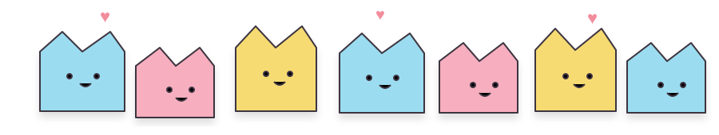

01. Make it yours
Pick an occasion, cute theme and write a message that feels like you.
Create a cute, personal digital gift for birthdays, anniversaries, love notes and every little celebration — then share it with one QR code.

No app needed for the person receiving the gift.
Pick an occasion, cute theme and write a message that feels like you.
Your gift gets a unique link and QR code ready to share or print.
They scan it on their phone and open a little world made just for them.
1 gift, basic themes, QR link, and a small Scan2Gift signature.
Premium templates, media, custom QR styling, printable cards and no watermark.
Multiple gifts, advanced analytics, custom branding and premium features.